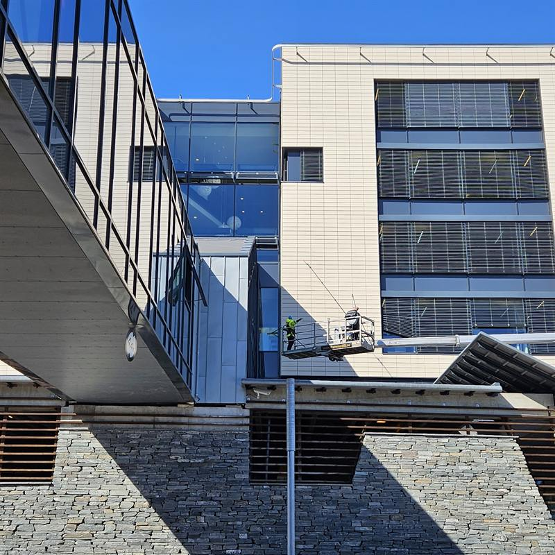
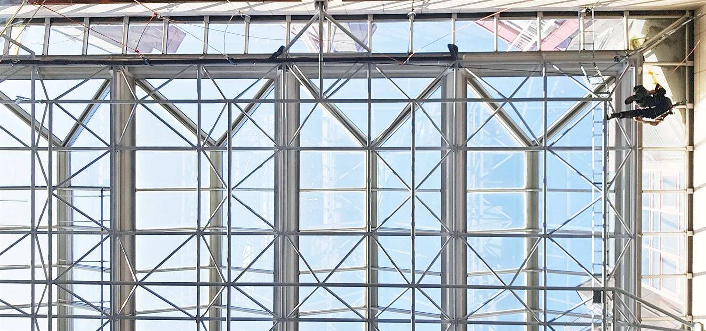
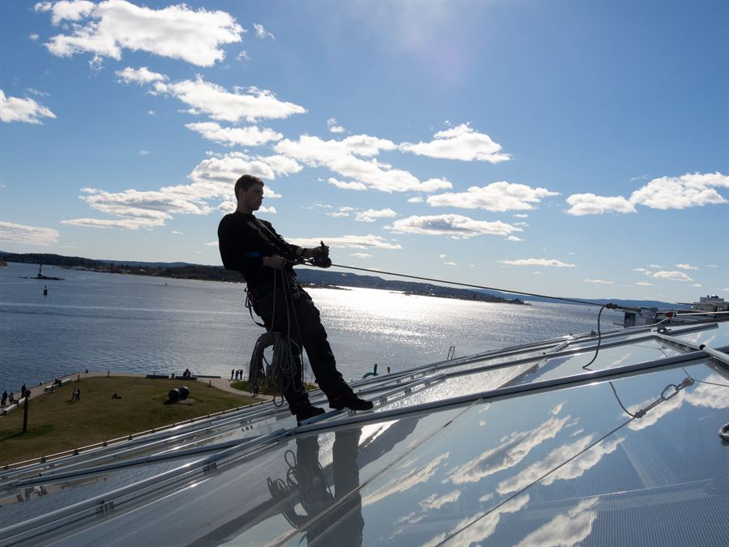
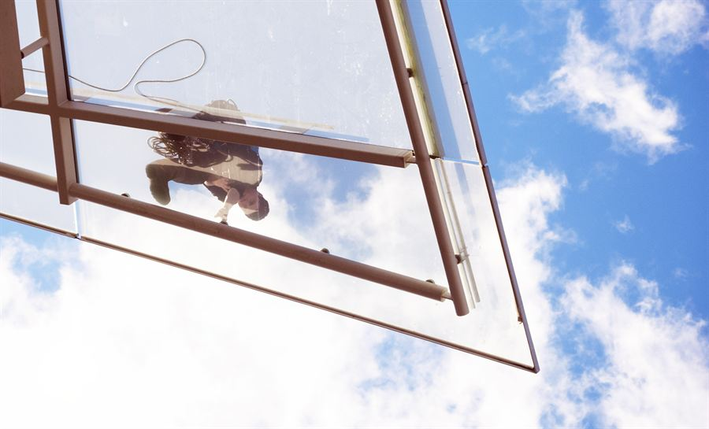
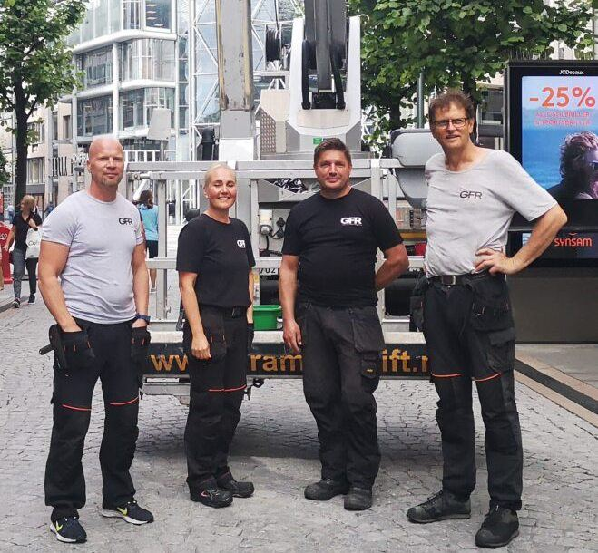

Fasadevask
Vi rengjør de fleste materialer på forskjellige typer bygg. Ulike materialer binder forurensning og smuss på ulike måter, og krever derfor tilpassede kjemiske blandinger, riktig temperatur og sikre metoder.

Arbeid i tau · opplært etter NS 9600
GFR AS · Melsomvik
Vi vasker fasader og vinduer og fjerner riper i glass for næringsbygg, skoler og institusjoner på hele Sørøstlandet. Der lift og stige ikke kommer til, jobber vi i tau.
Tjenester
Tre tjenester, samme krav til utførelsen: riktig middel, riktig temperatur og sikker metode for materialet vi står foran.

Vi rengjør de fleste materialer på forskjellige typer bygg. Ulike materialer binder forurensning og smuss på ulike måter, og krever derfor tilpassede kjemiske blandinger, riktig temperatur og sikre metoder.

Vi dekker flere hundre kvadratmeter med glass til avtalt tid for næringsbygg, skoler og institusjoner. Tradisjonell vask der det passer, og rent-vann-teknologi helt uten kjemikalier der det er riktig.

Riper i glasset filtrerer dagslyset på en annen måte og legges merke til. Vi fjerner riper i alle typer vindusglass med verktøy og metoder som gjør glassene jevne og blanke igjen — på stedet, uten å montere ut vinduet.
Utilgjengelige steder
På steder med vanskelig tilgjengelige områder kan arbeid i tau være løsningen. Arbeidslaget vårt er opplært etter Norsk Standard NS 9600 og oppfyller kravene Arbeidstilsynet har satt for å kunne arbeide i tau.
Slik gjør vi jobben
Et rengjøringsmiddel som er nødvendig på ett materiale, kan være helt feil og ødeleggende på et annet. Derfor begynner jobben med befaring, ikke med spyleren.
Vi ser på hva fasaden og glasset er laget av, og hva som har bundet seg til overflaten. Så velger vi middel, temperatur og metode for nettopp det materialet.
Vi er sertifisert for å sperre av og skilte, og har dokumentert arbeidsvarslingskurs. Skal vi arbeide på offentlige eller kommunale veier, søker vi vedtak hos Statens vegvesen.
Med heisekraner, lange karbonfiberstenger, tau og ladbare høytrykksspylere kommer vi til på de fleste bygg — og er uavhengige av strøm og vanntilkobling på stedet.
Sertifiseringer og godkjennelser
Alle våre ansatte har kurs i spesialheis og erfaring med håndtering av alle ulike typer heis. Vi har fallsikringskurs og setter alltid sikkerhet fremst ved arbeid i store høyder.
GFR AS er sertifisert for å kunne sperre av og skilte der vi arbeider.
Vi har dokumentert arbeidsvarslingskurs (AVK1 og AVK2) og gjennomfører forskriftsmessig sikring av arbeidsstedet.
Arbeidslaget vårt er opplært etter Norsk Standard NS 9600, og oppfyller kravene Arbeidstilsynet har satt for arbeid i tau.
GFR AS er godkjent rengjøringsbedrift hos Arbeidstilsynet.
Vi har lifter og høytrykksspylere for både varmt og kaldt vann. Maskinene blir forskriftsmessig vedlikeholdt og kontrollert hvert år.
Vi søker om vedtak for å arbeide på offentlige og kommunale veier hos Statens vegvesen.
Befaring
Velg hva som skal gjøres, si litt om bygget og legg igjen kontakt. Du får en oppsummering du kan sende til post@gfr.no med én knapp — også når vi står i arbeid.

Om GFR AS
GFR AS holder til på Solnesbakken 1 i Melsomvik. Vi utfører alle oppgaver med fasade- og vindusvask for alle typer næringsbygg, og velger rengjøringsmidler etter hva bygget tåler.
Med vindusvask har vi lang erfaring og kunnskap om glassflater som kan kreve ulike rengjøringsmidler — «tradisjonell vask» der det er riktig, og rent-vann-teknologi der det passer bedre.
Kontakt
Foretrekker du skriftlig? Bruk befaringen over — du får en ferdig oppsummering du kan sende med én knapp.
Telefon
33 33 68 86E-post
post@gfr.noBesøk
Solnesbakken 1
3159 Melsomvik
Organisasjon
GFR AS
Org.nr 938 197 156